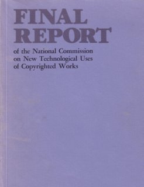
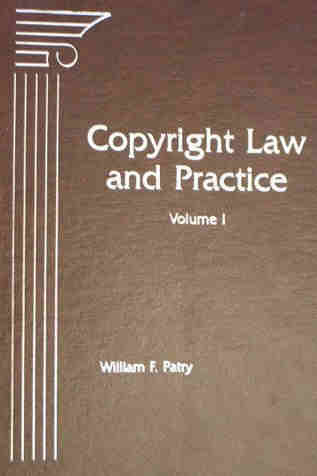

Welcome to digital-law-online.info, a web site created by Professor Emeritus Lee A. Hollaar of the School of Computing at the University of Utah. Initially, this site provided supplementary material to Professor Hollaar's treatise "Legal Protection of Digital Information," including an errata (last on September 26, 2006) and updates (last on September 12, 2014) to the printed treatise.
Also available here are papers on intellectual property and computer law by Professor Hollaar.
|
This web site contains the full text of the First Edition of the treatise, published by BNA Books on November 26, 2002, and updated through September 12, 2014. The following material is available online:
A Second Edition was published in 2016. In addition to a new discussion of software patents, it adds chapters on trademarks and trade secrets. Because of contractual obligations, that new material cannot be available here. It is out of print, but may be available in a library and is available online at Bloomberg Law. |
|
|  |
The National Commission on New Technological Uses of Copyrighted Works (CONTU) was established by Congress, and operated between 1975 and 1978 to determine how the Copyright Act of 1976 should address computers and copy machines. On July 31, 1978, it issued its Final Report, which is frequently cited, but not readily available. It is now available both as a series of web pages and as PDF images of the original report. You can also find any section using this Table of Contents.
And we have a picture of the CONTU
commissioners and staff, taken at their last meeting. |
|  | Bill Patry's treatise, "Copyright Law and Practice" (published by BNA Books in 1994, with a new edition coming out this year), is one of the most readable and comprehensive works on copyright law. BNA Books has given permission to include its excellent history of copyrights on this web site. You can find any section by using this Table of Contents. |
Last updated: 06-27-2023